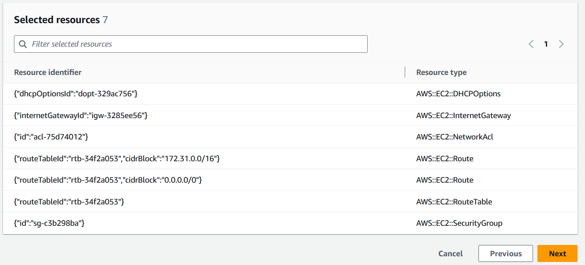

Gerar modelos para recursos existentes
Com o gerador de IaC (gerador de infraestrutura como código) do AWS CloudFormation, é possível gerar um modelo usando recursos da AWS provisionados em sua conta que ainda não são gerenciados pelo CloudFormation. Use o modelo para importar recursos para o CloudFormation ou replicar recursos em uma nova conta ou região.
O processo de geração de IaC consiste em várias etapas:
-
Inicie uma varredura da sua conta.
-
Crie um modelo do zero ou usando o modelo de uma pilha existente como ponto de partida.
-
Adicione recursos digitalizados e recursos relacionados ao modelo usando o assistente de adição de recursos.
-
Importe os recursos a serem gerenciados pelo CloudFormation como uma pilha ou migre-os para uma aplicação do AWS CDK.
O recurso de gerador de IaC está disponível em todas as regiões comerciais e oferece suporte a muitos tipos de recursos comuns da AWS. Para obter uma lista completa, consulte Suporte a tipos de recursos.
Tópicos
Considerações
É possível gerar modelos JSON ou YAML para recursos da AWS publicados no registro do CloudFormation para os quais você tem permissões de leitura. Os modelos do recurso de gerador de IaC preparam recursos de nuvem de forma confiável e rápida, sem que seja necessário descrever um recurso propriedade por propriedade.
A tabela a seguir lista as cotas disponíveis para o recurso de geração de IaC.
| Nome | Valor |
|---|---|
|
Número máximo de usuários que podem ser processados em uma varredura de conta |
100000 |
|
Número de varreduras por dia (para contas com menos de 10.000 recursos) |
3 |
|
Número de varreduras por dia (para contas com mais de 10.000 recursos) |
1 |
|
Número simultâneo de modelos gerados por conta |
5 |
|
Número simultâneo de recursos modelados para uma geração de modelo. |
5 |
|
Número total de recursos que podem ser modelados em um modelo |
500 |
Importante
O gerador de IaC só é compatível com recursos compatíveis com a API do Cloud Control na sua região. Para obter mais informações, consulte Como determinar se um tipo de recurso é compatível com o Cloud Control API no Guia do usuário do Cloud Control API
Gerar um modelo (console)
Esta seção descreve como criar um modelo, adicionar recursos ao seu modelo e importar recursos do modelo para uma pilha usando o recurso de gerador de IaC.
Para abrir um novo modelo usando o gerador de IaC
Faça login no AWS Management Console e abra o console AWS CloudFormation em https://console.aws.amazon.com/cloudformation
. -
Na página de navegação, escolha Gerador de IaC.

-
No painel Varreduras, escolha Iniciar nova varredura. As varreduras descobrem os recursos provisionados em sua conta e a relação entre os recursos. Quanto mais recursos houver em sua conta na região, maior será a duração da varredura.

-
No painel Modelos, escolha Criar modelo.

-
Selecione Iniciar com um modelo novo.
-
No painel Nome do modelo, insira um nome para o seu modelo gerado.
-
(Opcional) Configure sua Política de exclusão e a Política de substituição de atualização.
-
Escolha Próximo para adicionar recursos encontrados pela varredura ao modelo.
-
Para adicionar recursos encontrados pela varredura a um modelo
-
Navegue pela lista de recursos encontrados pela varredura. É possível filtrar os recursos por identificador, tipo de recurso ou tags. Os filtros são mutuamente inclusivos.

-
Selecione os recursos que deseja adicionar.
Repita as etapas 1 e 2 até adicionar todos os recursos necessários ao seu modelo.
 -
Escolha Próximo para sair da página Adicionar recursos encontrados pela varredura e prossiga para a página Adicionar recursos relacionados.
-
Revise uma lista recomendada de recursos relacionados. Recursos relacionados, como instâncias do Amazon EC2 e grupos de segurança, são interdependentes e normalmente pertencem à mesma workload. Selecione os usuários relacionados que deseja incluir no modelo gerado.
nota
Sugerimos adicionar todos os recursos relacionados a esse modelo.

-
Revise os detalhes do modelo, recursos encontrados pela varredura e recursos relacionados. Escolha Editar para fazer quaisquer alterações.
-
Escolha Criar modelo para sair da página Revisar e criar e criar o modelo.

Resultados: você iniciou a criação do modelo do CloudFormation e adicionou seus recursos encontrados pela varredura e relacionados.
Para importar os recursos a serem gerenciados pelo CloudFormation como uma pilha
-
Escolha Importar para pilha e, em seguida, Próximo.
-
Insira o nome da sua pilha no painel Especificar pilha da página Especificar detalhes da pilha. Escolha Próximo.
-
Revise e insira os parâmetros da pilha. Escolha Próximo.
-
Revise suas opções na página Revisar alterações e escolha Próximo.
-
Revise seus detalhes na página Revisar e importar e escolha Importar recursos.
Resultados: todos os recursos adicionados ao seu modelo com o gerador de IaC são importados para uma pilha do CloudFormation.
Gerar um modelo (AWS CLI)
Esta seção descreve como procurar recursos com uma varredura, criar modelos, adicionar recursos ao seu modelo e atualizá-lo e excluir um modelo usando o AWS CLI.
Para procurar recursos em sua conta
-
Para fazer uma varredura de recursos em sua conta na região selecionada, use a operação start-resource-scan.
$aws cloudformation start-resource-scanO comando retorna o seguinte:
{ "ResourceScanId": \ "arn:aws:cloudformation:us-east-1:123456789012:resourceScan/0a699f15-489c-43ca-a3ef-3e6ecfa5da60" }
Para descrever a varredura de recursos da conta
-
Para descrever a varredura de recursos em sua conta, use a operação describe-resource-scan.
$aws cloudformation describe-resource-scan \ --resource-scan-id \ "arn:aws:cloudformation:us-east-1:123456789012:resourceScan/0a699f15-489c-43ca-a3ef-3e6ecfa5da60"O comando retorna o seguinte:
{ "ResourceScanId" : \ "arn:aws:cloudformation:us-east-1:123456789012:resourceScan/0a699f15-489c-43ca-a3ef-3e6ecfa5da60", "Status": "complete", "StartTime": "2023-08-21T03:10:38.485000+00:00", "EndTime": "2023-08-21T03:20:28.485000+00:00", "PercentageCompleted": 100.0, "ResourceTypes": [ "AWS::EKS::Cluster", "AWS::S3::Bucket" ], }
Para listar todos os recursos encontrados pela varredura
-
Para listar os recursos encontrados na varredura, use a operação list-resource-scan-resources. A resposta inclui uma coluna que indica se o CloudFormation já está gerenciando o recurso.
$aws cloudformation list-resource-scan-resources \ --resource-scan-id \ "arn:aws:cloudformation:us-east-1:123456789012:resourceScan/0a699f15-489c-43ca-a3ef-3e6ecfa5da60" \ --resource-identifier exampleResourceO comando retorna o seguinte:
{ "Resources": [ { "ResourceType": "AWS::EKS::Cluster", "ResourceIdentifier": { "ClusterName": "exampleResourceCluster" } }, "ManagedByStack": false { "ResourceType": "AWS::S3::Bucket", "ResourceIdentifier": { "BucketName": "exampleResourceBucket" }, "ManagedByStack": false } ] }Neste exemplo, suponha que a saída de
list-resource-scan-resourcesseja salva em um arquivo JSON chamadoresources.json.
Para listar todos os recursos relacionados aos recursos examinados pela varredura
-
Para listar os recursos relacionados aos examinados pela varredura, crie lotes de até 100 recursos da varredura e use a operação list-resource-scan-related-resources para cada lote. Tenha em mente que a saída pode conter recursos duplicados na lista.
A resposta inclui uma coluna que informa se o CloudFormation já está gerenciando o recurso. Recomenda-se adicionar todos os recursos relacionados ao modelo.
$aws cloudformation list-resource-scan-related-resources \ --resource-scan-id \ "arn:aws:cloudformation:us-east-1:123456789012:resourceScan/0a699f15-489c-43ca-a3ef-3e6ecfa5da60" \ --resources file://resources.jsonO comando retorna o seguinte:
{ "RelatedResources": [ { "ResourceType": "AWS::EKS::Nodegroup", "ResourceIdentifier": { "NodegroupName": "exampleNodegroup" }, "ManagedByStack": false }, { "ResourceType": "AWS::IAM::Role", "ResourceIdentifier": { "RoleId": "arn:aws::iam::123456789012:role/S3Access" }, "ManagedByStack": false } ] }nota
A lista de entrada de recursos não pode exceder um tamanho de 100. Para listar recursos relacionados para mais de 100 recursos, execute a operação em lotes de 100 e consolide os resultados.
Suponha que a saída de
list-resource-scan-related-resourcestambém seja adicionada ao arquivo JSON chamadoresources.json.
Para gerar um modelo
-
Para gerar um novo modelo sem recursos, use a operação create-generated-template e especifique o nome do modelo.
$aws cloudformation create-generated-template \ --generated-template-nameTemplateNameO comando
create-generated-templateretorna o seguinte:{ "Arn": \ "arn:aws:cloudformation:us-east-1:123456789012:generatedtemplate/7fc8512c-d8cb-4e02-b266-d39c48344e48", "Name": "TemplateName" }
Para atualizar o modelo gerado com recursos
-
Para atualizar o seu modelo recém-criado, é possível especificar uma lista de usuários que deseja adicionar. Neste exemplo, usamos o arquivo
resources.json. O arquivo de texto JSON pararesources.jsoné o seguinte:[ { "ResourceType": "AWS::EKS::Cluster", "LogicalResourceId":"Cluster", "ResourceIdentifier": { "ClusterName": "exampleResourceCluster" } }, { "ResourceType": "AWS::S3::Bucket", "LogicalResourceId":"Bucket", "ResourceIdentifier": { "BucketName": "exampleResourceBucket" } }, { "ResourceType": "AWS::EKS::Nodegroup", "LogicalResourceId":"Nodegroup", "ResourceIdentifier": { "NodegroupName": "exampleNodegroup" } }, { "ResourceType": "AWS::IAM::Role", "LogicalResourceId":"Role", "ResourceIdentifier": { "RoleId": "arn:aws::iam::123456789012:role/S3Access" } } ]Para atualizar seu modelo, use a operação update-generated-template, especifique o nome da pilha e especifique seu arquivo de texto para adicionar recursos ao seu modelo. A opção
--cloud-formation-template-configurationnão está incluída, então as políticasUpdateReplacePolicyeDeletionPolicysão definidas comoRetainpor padrão.$aws cloudformation update-generated-template \ --generated-template-nameTemplateName\ --add-resources file://resources.jsonO comando
update-generated-templateretorna o seguinte:{ "Arn": "arn:aws:cloudformation:us-east-1:123456789012:template/equipment-sorter", "Name": "TemplateName" }
Para excluir o modelo especificado pelo nome da pilha
-
Para excluir o modelo gerado, use a operação delete-generated-template e especifique o nome da geração do modelo ou o ARN da geração do modelo.
$aws cloudformation delete-generated-template \ --generated-template-nameTemplateName
Gere e gerencie modelos com o AWS CDK
O AWS Cloud Development Kit (AWS CDK) é um framework de desenvolvimento de software de código aberto que você pode usar para desenvolver, gerenciar e implantar recursos do AWS CloudFormation usando linguagens de programação conhecidas.
A CLI do AWS CDK fornece uma integração com o gerador de IaC. Use o comando cdk migrate da CLI do AWS CDK para gerar um modelo do AWS CloudFormation e criar uma nova aplicação do CDK que contenha seus recursos. Em seguida, é possível usar o AWS CDK para gerenciar seus recursos e implantar no AWS CloudFormation.
Para obter mais informações, consulte Migrar para o AWS CDK no Guia do desenvolvedor do AWS Cloud Development Kit (AWS CDK).